Wild Item Farmer
Note that the primary use of this program is to exploit a glitch in game version 3.0.0. It is likely that this glitch will be patched in the future.
Program Description
This is a program to farm the version 3.0.0 item duplication glitch. Though in theory, this program can be used to farm any item held by a wild Pokémon.
Important Note: This program is only reliable if run in a place where both of these conditions hold:
- You cannot be attacked by other wild Pokémon.
- The cloned Pokémon cannot run around.
As of this writing, there is only one known location where this is possible (see below).
In all other locations that fail at least one condition, this program will not be able to reliably duplicate more than 50 - 100 (in the best case) items before it breaks.
Before you begin, make sure you understand how the glitch works:
The program does not automate the part that clones a Pokémon into the wild. Instead, it automates the part that repeatedly battles it and steals its item. So you still need to setup according to the video.
(Do not catch the clone if it is a fused Pokémon! A cloned fused Pokémon cannot be properly unfused or removed from the game.)
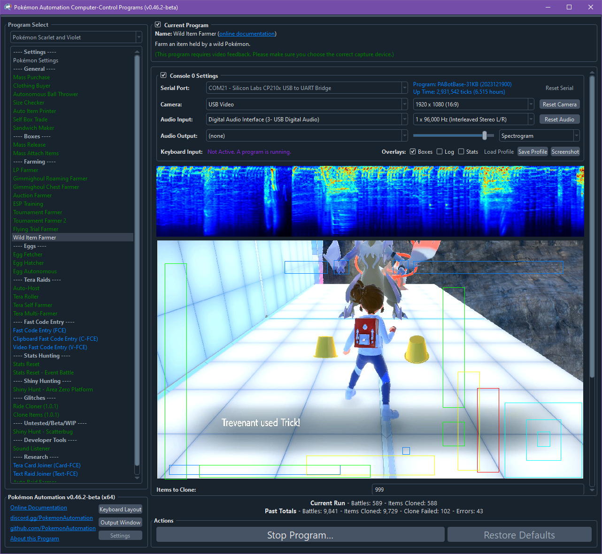
How This Program Works:
Your lead Pokémon must know Trick in the 1st position. This is what will be used to steal items. Furthermore, if this Pokémon forgets Trick, it must have Trick in the first relearn slot. When it runs out of PP, the program will forget and relearn Trick to restore its PP.
However, this program has two major failure cases:
- If the clone wanders away from you such that the program can no longer engage it by throwing your lead out.
- If you encounter anything other than the clone.
In either case, the program will detect this error condition and stop. There is ongoing research on how to minimize these scenarios as well as how to recover from them.
Setup of Settings
Switch Settings:
- Screen size: Must be 100% within the Switch settings
Program Settings:
- Video Resolution: 1080p or higher
Game Settings:
- Text Speed: Fast
Instructions
- The cloned Pokémon is already in the wild.
- The cloned Pokémon is holding an item.
- The cloned Pokémon cannot do any damage to you or itself. (knows no damaging moves or self-harming moves)
- The cloned Pokémon cannot block you from using Trick. (don't have it know both Imprison and Trick!)
- The cloned Pokémon cannot block you from running. (no Arena Trap, etc...)
- Your lead Pokémon is not holding an item.
- Your lead Pokémon's first move is Trick.
- Your lead Pokémon's first relearn slot after forgetting Trick is Trick itself.
- Make sure there are no other wild Pokémon near you or the cloned Pokémon.
- Start the program either in battle with the cloned Pokémon or standing in front of and facing it. (the program handles both cases)
How get Trick into the 1st relearn slot:
- If your Pokémon has Trick not in the first 4 relearn slots, you cannot use it as you will not be able to get it into the first slot.
- If your Pokémon has Trick in the 2nd-4th slots, have it learn all the moves above it. That will move Trick into the first slot.
- If your Pokémon can only learn Trick as a TM, it will have it in a relearn slot only if it was TM'ed the move in Scarlet/Violet. If it was transferred in from a different game already knowing Trick, you will first need to forget Trick and relearn it through a TM.
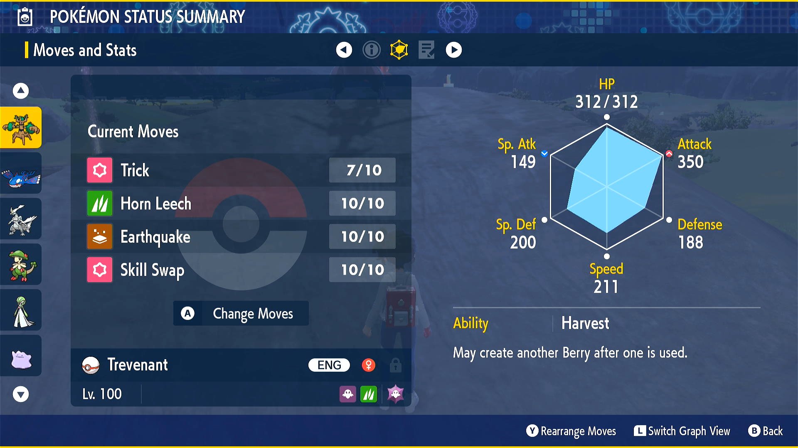 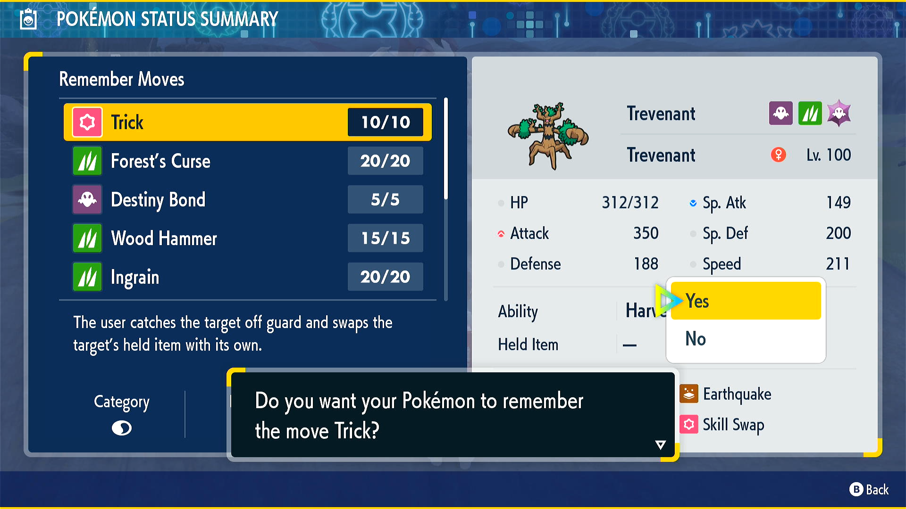
Suggested Start Locations
This is ongoing research. Feel free to check back for updates. Likewise you can participate in this research in our Discord server.
You can lure your clone around much like the Smeargle. And if your clone can fly (Kyurem can fly), you can get it to follow you to almost anywhere in the Terarium as it can even cross biomes!
Walk around your clone until the green question mark appears (usually showing up behind it will do), then it will follow you. Getting it to fly is a bit tricker as you will need some sort of obstacle to make it jump into the air (may vary by Pokémon). But once you get it into the air, it will be able to follow you to almost anywhere on the map as long as it doesn't get stuck.
The Spawning Tree: (average clones to failure: 20-30)
The location around the tree that spawns your clone is not a great location as it will wander around and there are lots of wild Pokémon to attack you. Unless you get lucky, running the program here will rarely last more than 20-30 items cloned before the clone wanders off or you get attacked by something else.
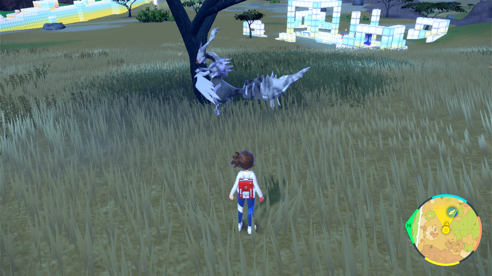
The Pride Rock: (average clones to failure: 50-70)
Near the west wide of Savanna Biome is a rock that looks like the pride rock from Lion King where Simba (+ his dad) stands on top. In Scarlet/Violet, there will be a male Pyroar standing in the same place and pose.
Depending on what your clone Pokémon is, it may be possible to lead it up the rock. (Kyurem is confirmed to work) You want to corner the clone on the tip of the rock while you stand further down. The clone will not be able to run away and you will be relatively protected from getting attacked.
Make sure you turn the "Forward Run" option ON.
Failure cases are:
- Eventually getting attacked from behind. (usually a Deerling)
- The encounter cycle rotates out of place and the clone wanders away from in front of you.
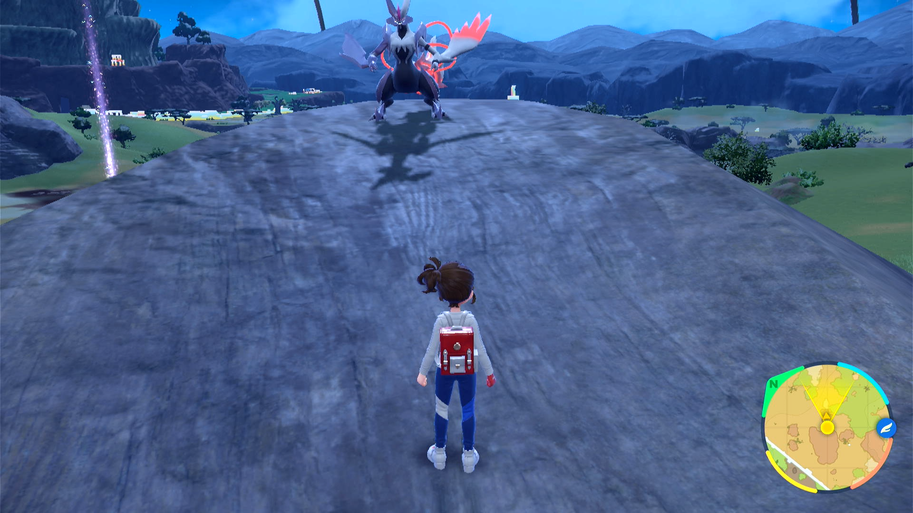
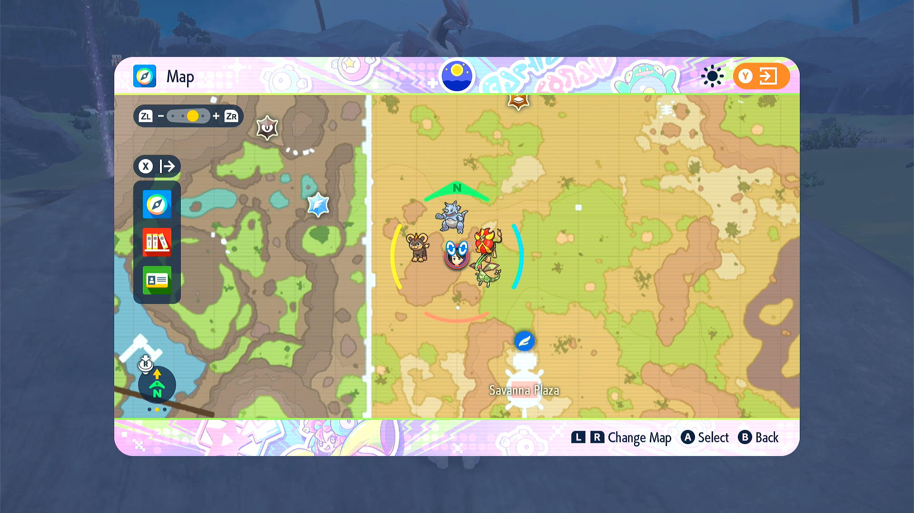 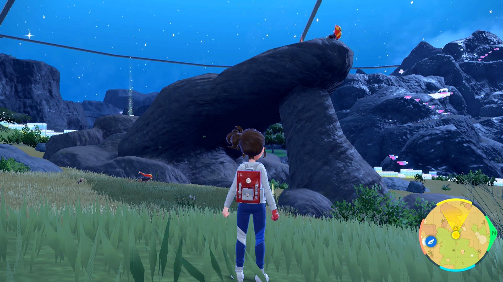
Ice/Canyon Boundary Platform: (average clones to failure: ∞)
This is the first known full-proof location. On the far west side of the map right on the boundary of the Ice and Canyon biomes, there are several platforms on the white blocks that are high up above the terrain. These can be difficult to reach and will require that your clone be able to fly. (Kyurem can fly)
Once you land on this platform, place the clone on the edge with the cliff behind it while you stand further in. So you are standing to the east facing the clone which is on the west. Turn the "Forward Run" option OFF. Then start the program. If set up right, this location will work forever. The clone has no place to run to, and you cannot be attacked by anything.
Do not face the other direction as the battle may push the clone into the wall at which it is lost. Do not turn on the "Forward Run" option as it eventually causes either you and/or the clone to fall off.
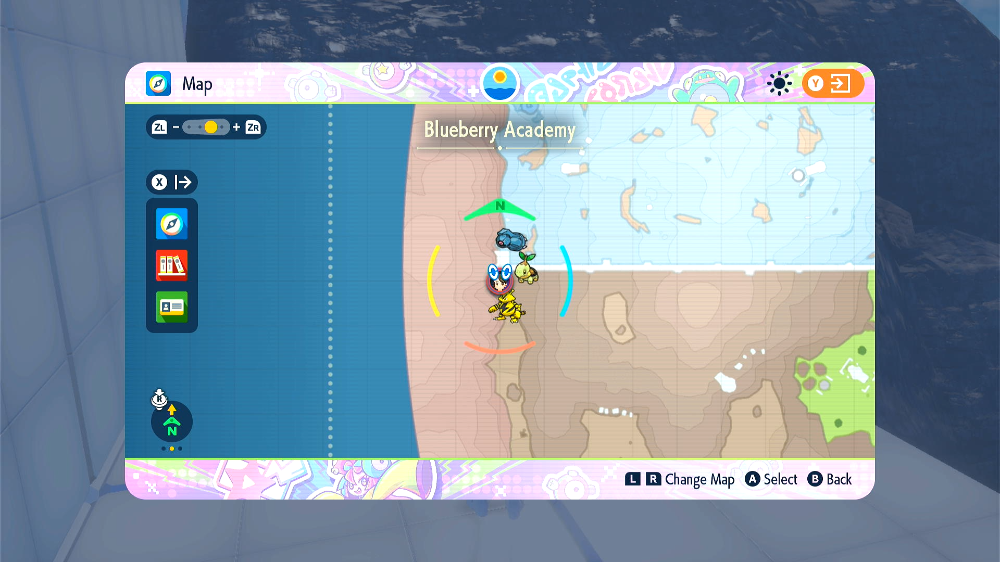 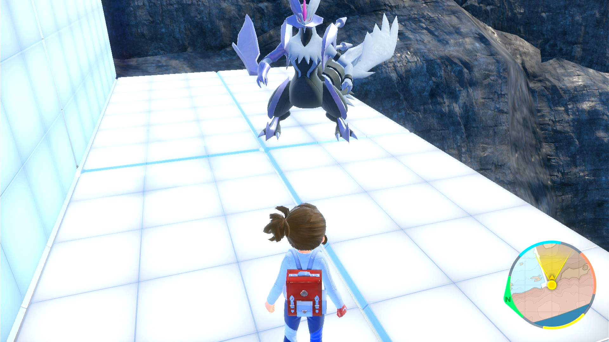
Here is a sample video demonstrating how the clone can be lured to this location: https://cdn.discordapp.com/attachments/711649658220314635/1196998059427647578/CloneGlitch-KyuremToPlatform.mp4
(To be clear, this video is a perfect run done with quite a bit of practice. Often times, the clone will get stuck somewhere and you will need to go find it and lure it back out.)
Bad Start Locations
Terarium Entrance: (average clones to failure: 10-20)
Next to the ramp at the entrance of the Terarium. While it looks isolated, it has been tested to be bad. You get attacked from behind by lots of things.
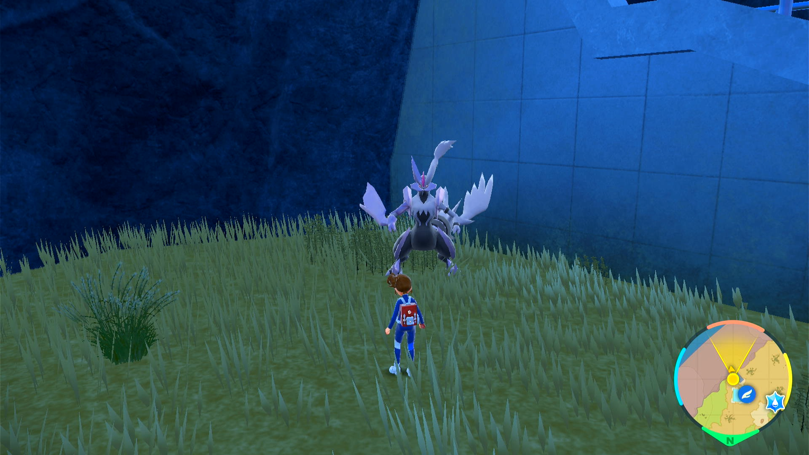
Various Caves: (average clones to failure: 20-30)
Large clones cannot be led into the cave. It's unknown if smaller ones can. Outside you get attacked.
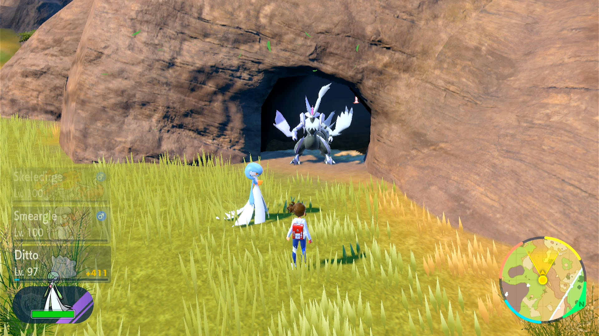
Credits
- Author: Kuroneko/Mysticial
Discord Server: